Administrative SysAdmin
Testing Administrative SysAdmin Permissions
After testing the standard SysAdmin role, I moved on to the privileged Administrative SysAdmin role.
The purpose of this testing is to confirm that the Administrative SysAdmin accounts can perform the higher-risk operations intentionally denied to standard SysAdmins. This page will be expanded as I complete each test.
User Objects
Step 1: Create a User Object
I first attempted to create a test user in the Company Users OU:
New-ADUser -Name "Test User" `
-SamAccountName "tuse" `
-Path "OU=Company Users,DC=earth,DC=local" `
-Enabled $true `
-AccountPassword (ConvertTo-SecureString "Password1!" -AsPlainText -Force)
I verified that the user had been created successfully:
Get-ADUser -Identity "tuse"
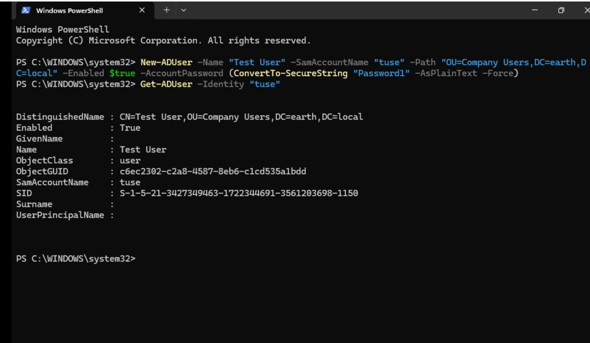
The query returned the new account, confirming that the Administrative SysAdmin role could create user objects in Company Users.
However, I had not supplied GivenName or Surname, so those attributes were not populated.
I created a second account with the additional attributes:
New-ADUser -Name "Test2 User2" `
-GivenName "Test2" `
-Surname "User2" `
-SamAccountName "tuse2" `
-Path "OU=Company Users,DC=earth,DC=local" `
-Enabled $true `
-AccountPassword (ConvertTo-SecureString "Password1!" -AsPlainText -Force) `
-Verbose
User creation confirmed
The Administrative SysAdmin role could create user objects in the delegated Company Users scope.
Name attributes
The Name parameter creates the object's display name but does not automatically populate GivenName and Surname. Those attributes must be supplied separately when required.
Step 2: Delete a User Object
I next attempted to delete the second test account:
Remove-ADUser -Identity "tuse2"
I reviewed Effective Access for the Administrative SysAdmin account. The interface showed permission to create and delete user objects.
I had encountered a similar discrepancy while testing Write all properties for the standard SysAdmin role. My first troubleshooting step was therefore to use the Delegation of Control Wizard and select the relevant predefined task rather than relying on the earlier custom permission selection.
After applying the predefined delegation, I reran the deletion command. It completed without an error.
I confirmed that the account no longer existed:
Get-ADUser -Identity "tuse2"
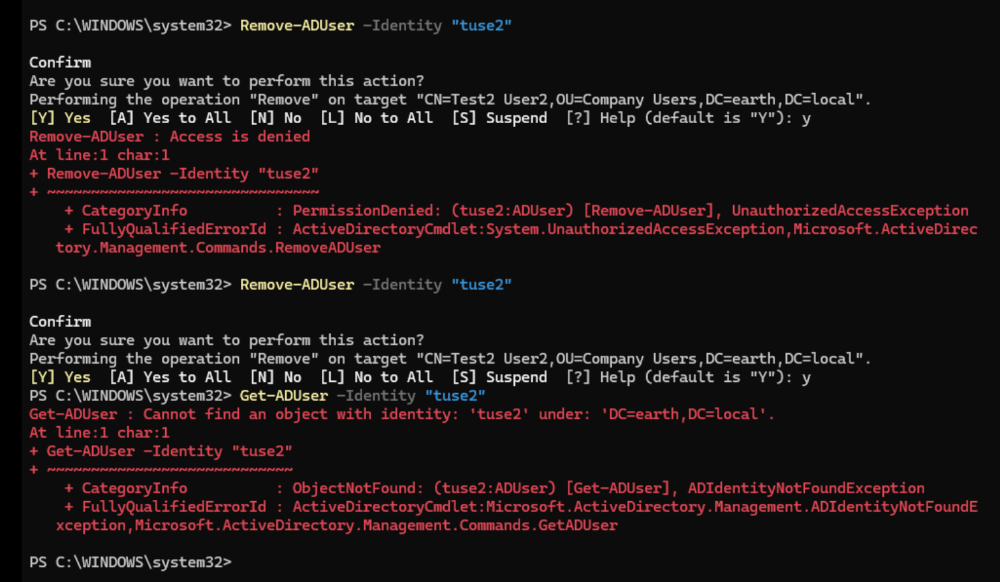
User deletion confirmed
After correcting the delegation, the Administrative SysAdmin role could delete user objects within the intended scope.
Validate effective permissions operationally
Effective Access is useful for investigation, but the final validation should be the real administrative operation. The initial deletion test exposed a difference between the displayed permissions and the permission set required by the command.
Step 3: Modify User Attributes
I tested whether the Administrative SysAdmin role could modify user attributes by updating the remaining test account:
Set-ADUser -Identity "tuse" `
-Department "Finance" `
-Title "Test Man" `
-Description "Angela"
I verified the updated attributes:
Get-ADUser -Identity "tuse" `
-Properties Department, Title, Description
User-property modification confirmed
The delegated Write all properties permission allowed the Administrative SysAdmin role to modify user attributes in Company Users.
Step 4: Modify Group Membership
I attempted to add the test user to EL_HelpDesk:
Add-ADGroupMember -Identity "EL_HelpDesk" `
-Members "tuse"
The account had broad permissions over Company Users, but the error identified EL_HelpDesk as the target ADGroup. This directed the investigation towards the permissions on the "Groups" OU containing the security groups.
I reviewed the Groups OU and found delegated entries for the standard SysAdmin role, but none for the Administrative SysAdmin role.
Permissions on Company Users did not extend to group objects stored in a separate OU. I therefore granted the Administrative SysAdmin role the intended management permissions over the Security Groups OU.
After applying the change, I reran Add-ADGroupMember and it completed successfully.
I verified the membership through the test user's MemberOf attribute:
Get-ADUser -Identity "tuse" -Properties MemberOf |
Select-Object Name, MemberOf
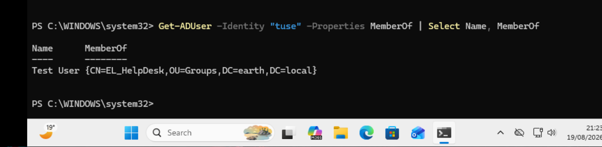
Group-membership management confirmed
The Administrative SysAdmin role could manage group membership after permissions were applied to the OU containing the group objects.
Permission scope matters
Permission to modify a user object does not automatically grant permission to modify a group object. Add-ADGroupMember changes the target group's membership attribute, so the required delegation must apply to the group and its OU.
Interpreting denial messages
Access is denied and Insufficient access rights should not be treated as reliable measurements of how close an account is to being authorised. The wording can vary between tools and APIs. The target object, requested operation and applicable ACL provide stronger diagnostic evidence.
Computer Objects
Step 1: Create Computer Objects
I next tested whether my Administrative SysAdmin account could create computer objects in the Workstations OU.
I initially ran:
New-ADComputer `
-Name "TEST-PC01" `
-SamAccountName "TEST-PC01$" `
-Path "OU=Workstations,DC=earth,DC=local" `
-Description "Administrative SysAdmin delegation test" `
-Enabled $true `
-Verbose
The command reached the correct target location but failed.
Computer-object creation failed
VERBOSE: Performing the operation "New" on target
"CN=TEST-PC01,OU=Workstations,DC=earth,DC=local".
New-ADComputer : A required attribute is missing
At line:1 char:1
+ New-ADComputer
+ ~~~~~~~~~~~~~~
+ CategoryInfo : NotSpecified:
(CN=TEST-PC01,OU...=earth,DC=local:String)
[New-ADComputer], ADException
+ FullyQualifiedErrorId : ActiveDirectoryServer:8316,
Microsoft.ActiveDirectory.Management.Commands.NewADComputer
Isolating the Cause
To determine whether one of the optional parameters was causing the error, I repeated the test using a minimal command:
New-ADComputer `
-Name "TEST-PC01" `
-Path "OU=Workstations,DC=earth,DC=local" `
-Verbose
The minimal command produced the same error. This confirmed that the problem was not caused by the additional attributes in the original command.
Reviewing the Delegated Permissions
I reviewed the permissions assigned to EL_Adm_SysAdmins on the Workstations OU.
The Administrative SysAdmin permissions had previously been configured for the Company Users and security-groups OUs. However, the required computer-object permissions had not been correctly delegated on the Workstations OU.
I corrected the delegation by granting EL_Adm_SysAdmins the following permissions over computer objects within the Workstations OU:
- Create computer objects
- Delete computer objects
- Read all properties
- Write all properties
- Reset password
- Validated write to DNS host name
- Validated write to service principal name
Retesting Computer-Object Creation
After correcting the delegation, I repeated the computer-object creation command:
New-ADComputer `
-Name "TEST-PC01" `
-Path "OU=Workstations,DC=earth,DC=local" `
-Description "Administrative SysAdmin delegation test" `
-Enabled $true `
-Verbose
Computer object created successfully
This time, the command completed successfully without producing an error.
I verified that the new computer object existed in the expected OU:
Get-ADComputer -Identity "TEST-PC01" `
-Properties Description |
Select-Object Name, Enabled, Description, DistinguishedName
OU=Workstations,DC=earth,DC=local
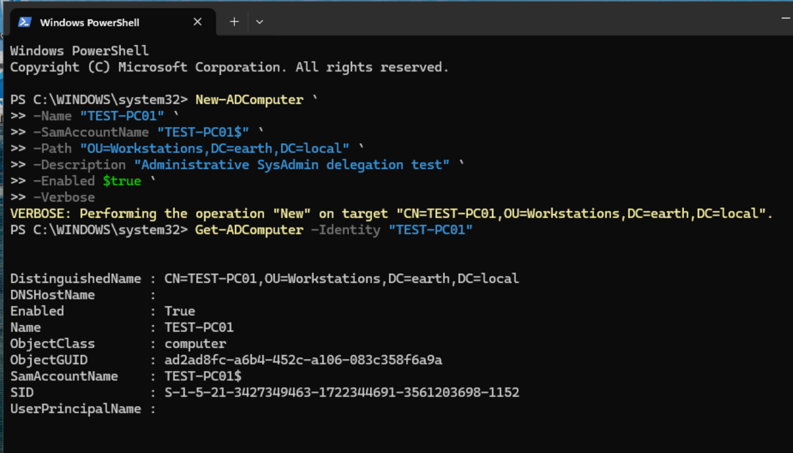
Step 2: Delete computer objects:
I Wanted to test deleting computer objects, so created a second test computer object with name TEST-PC02
Then I Deleted the newly created computer object:
Remove-ADComputer -Identity "TEST-PC02"
Get-ADComputer command and checked off another test.
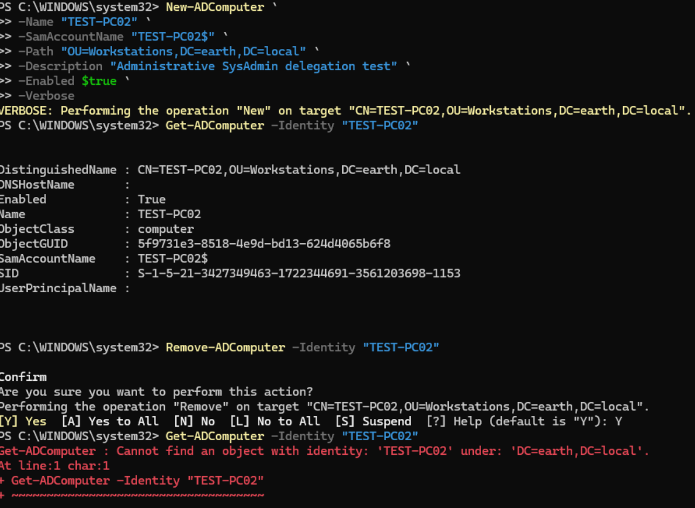
Step 3: Reset computer account password:
Why does this permission matter if users log in with user passwords, what are computer object passwords for? - Computer Object passwords allow workstations to prove their identity to Domain Controllers.
Scenario:
A domain-joined client goes offline for an extended period. In the meantime, Windows automatically rotates the computer account's password in AD (roughly every 30 days by default). When the client comes back online, its locally-stored password no longer matches AD's record, and the two sides fall out of sync.
The affected machine can still be pinged and is reachable on the network, but no domain account can log into it. The user sees: "The trust relationship between this workstation and the primary domain failed."
Real-world fix for this involves two separate halves:
- Reset the password on the AD side: Set-ADAccountPassword -Identity "WS_01$" -Reset
- Reset the password on the client side to match, run locally on the affected machine using a local admin account: Reset-ComputerMachinePassword -Server "WIN-FD0SR0GQS6P" -Credential (Get-Credential)
- Restart the client, then confirm a normal domain login succeeds
An alternative some sysadmins use instead: simply unjoin and rejoin the machine to the domain which may be more disruptive, but sometimes faster than chasing a stubborn password mismatch. This is genuinely why the standard Sysadmin/Help Desk delegation includes computer account password reset rights: it's a common, real fix for a common, real problem not just a theoretical permission.
Moving on to actually testing the delegated right itself against TEST-PC01. Before resetting, checked the current password timestamp as a baseline:
Get-ADComputer -Identity "TEST-PC01" -Properties PasswordLastSet | Select Name, PasswordLastSet
Ran the reset: Powershell Set-ADAccountPassword -Identity "TEST-PC01$" -Reset -NewPassword (ConvertTo-SecureString "R4nd0m!C0mputerPW#2026xz" -AsPlainText -Force)
Then validates by re-running the Get-ADComputer command I had just ran.

Step 4: Write all properties on computer objects:
To test this, I wanted to select some properties to modify.
I ran a command to see the full list of available properties on the object:
Get-ADComputer -Identity "TEST-PC01" -Properties * | Format-List *
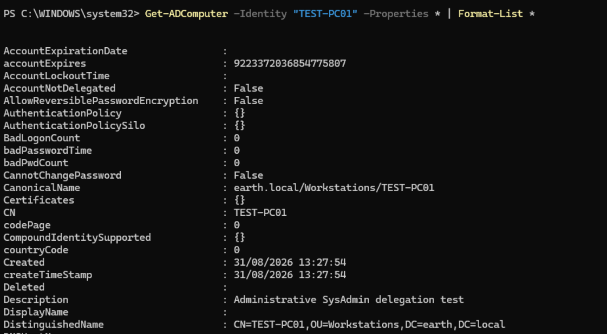
From the list, I selectedDescription, DisplayName, ManagedBy and OperatingSystem as the properties to modify.
Starting with Description, I ran:
Set-ADComputer -Identity "TEST-PC01" -Description "Mic check 2, 1, 2"
Get-ADComputer -Identity "TEST-PC01" -Properties Description | Select Description
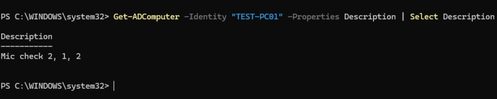
I then decided to update the remaining properties in a single command:
Set-ADComputer -Identity "TEST-PC01" -DisplayName "TestMe!" -ManagedBy "Kate Libby Admin" -OperatingSystem "Windows 11"
ManagedBy identity could not be resolved
Set-ADComputer : Identity info provided in the extended attribute:
'ManagedBy' could not be resolved.
Reason: Cannot find an object with identity:
'Kate Libby Admin' under: 'DC=earth,DC=local'.
I quickly understood this was due to the Kate Libby Admin entry, and corrected the command to use her SamAccountName instead, klib.admin:
Set-ADComputer -Identity "TEST-PC01" -DisplayName "TestMe!" -ManagedBy "klib.Admin" -OperatingSystem "Windows 11"
Get-ADComputer -Identity "TEST-PC01" -Properties Description, DisplayName, ManagedBy, OperatingSystem | Select Description, DisplayName, ManagedBy, OperatingSystem
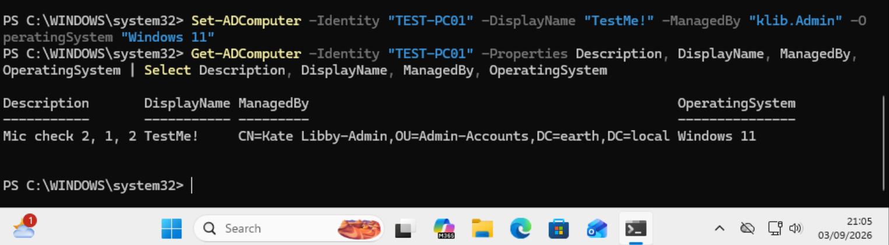
To add some extra testing, I logged in to Kate Libby's standard account to run the same command and validate that I would get an error.
I ran:
Get-ADComputer -Identity "TEST-PC01" -Properties Description, DisplayName, ManagedBy, OperatingSystem | Select Description, DisplayName, ManagedBy, OperatingSystem
Set-ADComputer -Identity "TEST-PC01" -Description "Should fail"
Fix: removed the combined permission entry entirely from the Workstations OU(s) where EL_SysAdmins was delegated, then re-ran delegation from scratch, this time selecting only Read, Read all properties, and Reset password, deliberately leaving out Write/Create/Delete. Retested as k.libby (standard):
Set-ADComputer -Identity "TEST-PC01" -Description "Should fail" -ErrorAction Stop
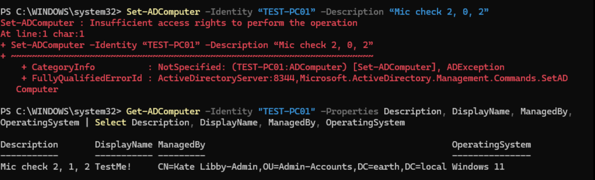
Common tasks
Manage GPO Links:
To test this I wanted to first allow my admin to be able to create GPOs, then manage them.
I had to enable that permission as currently only my DC could create new GPOs.
To enable on my DC, I ran:
Win + R > gpmc.msc
Then I navigated to the delegation tab of Group Policy Objects. I added EL_Adm_SysAdmins to the delegation and then immediately ran: Powershell New-GPO -Name "Admin Test"
This was successful.
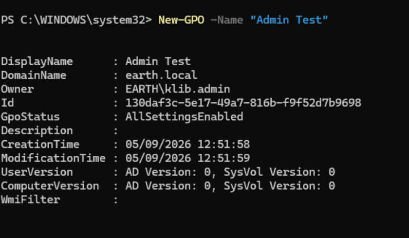
I then proceeded to link this new GPO to Company Users.
Powershell New-GPLink -Name "Admin Test" -Target "OU=Company Users,DC=earth,DC=local"
Which was successful, running: Get-GPInheritance -Target "OU=Company Users,DC=earth,DC=local" validated this.
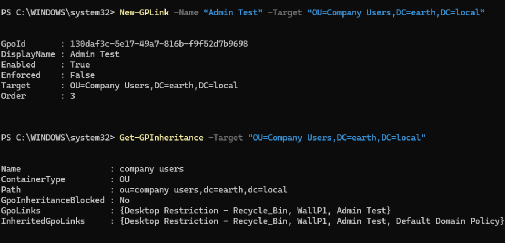
Then I simply unlinked and validated using the respective commands:Remove-GPLink -Name "Admin Test" -Target "OU=Company Users,DC=earth,DC=local"
Get-GPInheritance -Target "OU=Company Users,DC=earth,DC=local"
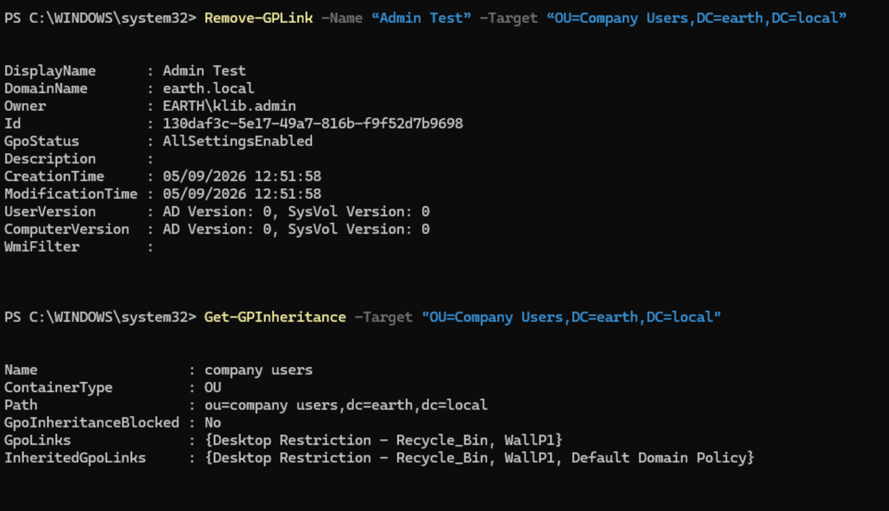
Then I deleted the test GPO using: Powershell Remove-GPO -Name "Admin Test"
Validating via: Powershell Get-GPO -Name "Admin Test"
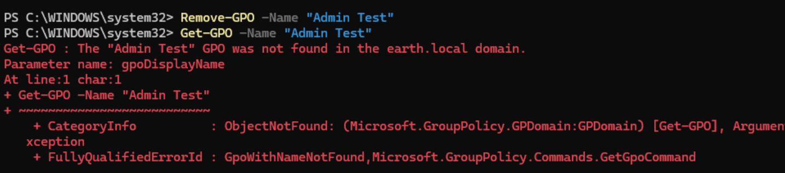
RSoP Planning and Logging
Logging
I ran gpresult /r /user EARTH\msco — the same command I ran with Kate Libby’s standard tier, just to confirm it worked. It did, so logging was validated.
RSoP Planning
Ran the Group Policy Modeling Wizard as k.libby-adm, targeting a domain user and WS_01.
Reached the summary of selections page successfully, but received the following error on
generation:
Group Policy error
The wizard was unable to generate the computer's data due to insufficient permissions.
Only the user's data will be displayed.
This narrowed the problem to the computer-side RSoP computation specifically, since the user-side data generated correctly.
Compared delegation directly against the standard-tier account, which was already working:
dsacls "CN=WS_01,OU=Workstations,DC=earth,DC=local" | Select-String "EL_Adm_SysAdmins"
dsacls "CN=WS_01,OU=Workstations,DC=earth,DC=local" | Select-String "EL_SysAdmins"
EL_SysAdmins had explicit Generate Resultant Set of Policy (Planning) and (Logging)
entries directly on the WS_01 computer object. EL_Adm_SysAdmins had none, despite already
holding the general RSoP extended right delegated at the domain root.
Finding
RSoP Planning/Logging rights need to be delegated at two potentially different levels: a general extended right covers user-side computation, but computer-side RSoP data specifically requires the same extended right delegated on the computer object or its containing OU.
Fixed by delegating Generate Resultant Set of Policy (Planning) and (Logging) to
EL_Adm_SysAdmins directly on the Workstations OU. Retested and the wizard generated both
computer and user data successfully with no error.
Further Testing of neccessary permissions for planning
Further tested whether the earlier DCOM/WMI permission changes were actually required for this
to work: removed both from EL_Adm_SysAdmins, retested, still worked; logged out and back in
to rule out a cached result, retested again, still worked. Confirmed the AD delegation alone
was the actual fix, both here and for the original EL_SysAdmins issue. See the correction
note on the SysAdmin page for the full detail.
The decisive difference from the standard SysAdmin investigation was scope, not mechanism:
- A general RSoP extended right delegated at the domain root was sufficient for user-side computation.
- Computer-side computation required the same right delegated specifically on the computer object's OU.
- The DCOM/WMI configuration inherited from the earlier SysAdmin troubleshooting played no actual role here, confirmed by removing it and retesting successfully.
Final Validation Summary
| Test | Expected result | Actual result | Status |
|---|---|---|---|
| Create user objects | Allowed | User created successfully (after supplying GivenName/Surname) | Pass |
| Delete user objects | Allowed | Initially denied; corrected via predefined delegation task, then succeeded | Pass |
| Modify user attributes | Allowed | Department, Title, and Description updated successfully | Pass |
| Modify group membership | Allowed | Initially denied; corrected by delegating on the Groups OU, then succeeded | Pass |
| Create computer objects | Allowed | Initially failed with a generic error; corrected by delegating on Workstations OU, then succeeded | Pass |
| Delete computer objects | Allowed | Deletion completed and verified | Pass |
| Reset computer account password | Allowed | Password reset completed; PasswordLastSet confirmed the change |
Pass |
| Write all properties on computer objects | Allowed | Description, DisplayName, ManagedBy, and OperatingSystem all updated successfully | Pass |
| Standard SysAdmin cannot write computer properties | Denied | Initially succeeded unexpectedly (misconfigured ACE); corrected, then correctly denied | Pass |
| Manage GPO links (create, link, unlink, delete) | Allowed | Test GPO created, linked, unlinked, and deleted successfully | Pass |
| RSoP Logging | Allowed | Applied GPO data returned for msco, matching standard-tier result |
Pass |
| RSoP Planning | Allowed | Initially failed on computer-side data; corrected by delegating RSoP rights on the Workstations OU, then succeeded | Pass |
Key Takeaways
This exercise reinforced several important lessons:
- Displayed or "effective" permissions are not a substitute for testing the actual administrative operation; the deletion test exposed a gap between what Effective Access showed and what the command required.
- Permissions granted together as part of one combined Access Control Entry cannot be selectively removed; a misconfigured or overly broad grant has to be removed and rebuilt from scratch, not surgically trimmed.
- Object-level delegation can differ from OU-level or domain-level delegation for the same right; RSoP Planning required the extended right on the specific computer object's OU, not just a broader grant that already covered user-side computation.
- Resolving an issue after making several changes does not confirm all of those changes were responsible; the DCOM/WMI permissions applied during the original SysAdmin RSoP Planning investigation were later proven unnecessary once tested independently.